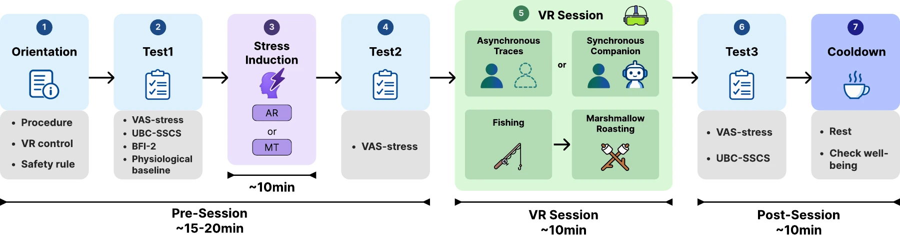

How do traces of human activity and a responsive AI companion shape a restorative VR experience?
Designing two social experiences
The study contrasts asynchronous traces of prior human activity with synchronous, embodied AI companionship. Both conditions share a forest environment and the same sequence of activities: fishing followed by marshmallow roasting. The comparison concerns complete social-cue designs rather than synchrony alone.
The design began with a practical question: a restorative environment may feel different when social presence comes from traces left by people versus a companion that responds in the moment. I kept the forest, activity sequence, interaction opportunities and audio aligned across conditions. This reduced environmental differences while retaining the distinct social designs. It also means the comparison cannot isolate synchrony from every other aspect of companionship.

From context to embodied behavior
I built the interactive environment in Unity and connected it to a Python policy layer. Activity and spatial context informed the selection of bounded, nonverbal behaviors such as gaze, orientation, movement, and participation in shared activities. Requesting the next decision during an ongoing action helped reduce visible waiting.
The companion pipeline separates perception, policy generation, legality checks and physical execution. Spatial anchors, activity state and user actions constrain what the agent can do next. Behavioral memory supplies continuity across decisions, while bounded actions and fallback behavior prevent a language-model suggestion from directly becoming unrestricted movement. I worked across scene interaction and the Python policy layer to connect these parts into a responsive embodied system.

Study design
Sixteen participants experienced both conditions on separate days in a counterbalanced within-subjects study. Each session included cognitive stress induction followed by a ten-minute VR experience. Measures included subjective stress, social connectedness, extraversion, and PPG-derived physiological measures.
Counterbalancing the order across participants helped address order effects, while separate sessions allowed each participant to experience both conditions. Stress induction established a pre-recovery state, and repeated subjective and physiological measures provided complementary views of change. The unit of interpretation remains a small within-subjects study, rather than a population-wide assessment of psychological treatment.
Findings and interpretation
Subjective stress decreased in both conditions. After accounting for pre-VR stress, the overall between-condition difference was inconclusive. An exploratory analysis suggested greater relative benefit from synchronous companionship among participants higher in extraversion. Physiological measures did not show a consistent matching pattern, and the proposed social-connectedness mediation pathway was not supported.
I interpret the subjective reduction as evidence about recovery within these sessions, not proof that one social design is universally better. The inconclusive adjusted comparison matters alongside the exploratory relationship with extraversion: an average contrast may conceal differences in how individuals respond to social presence. Physiological and mediation analyses did not provide a uniformly reinforcing account, so they should not be presented as confirmation of the subjective pattern.
What this study can—and cannot—tell us
The results motivate further work on the fit between social-cue designs and individual users. The small, non-clinical sample and absence of a no-social-cue control limit causal interpretation. The study does not establish clinical efficacy, universal superiority of AI companionship, or equivalence between the two conditions.
The study points toward personalization as a research direction: understanding when a responsive companion feels supportive, when traces of other people may be sufficient, and how preference interacts with the situation. Larger samples, additional control conditions and repeated use would be needed to test these possibilities. The paper is accepted and associated with ICHEC2026; detailed publication information and a public paper link are not yet available.
Materials & scope
Prepared from the research manuscript and study figures. Kaicheng Ma and Yucheng Jin. Accepted; awaiting publication.